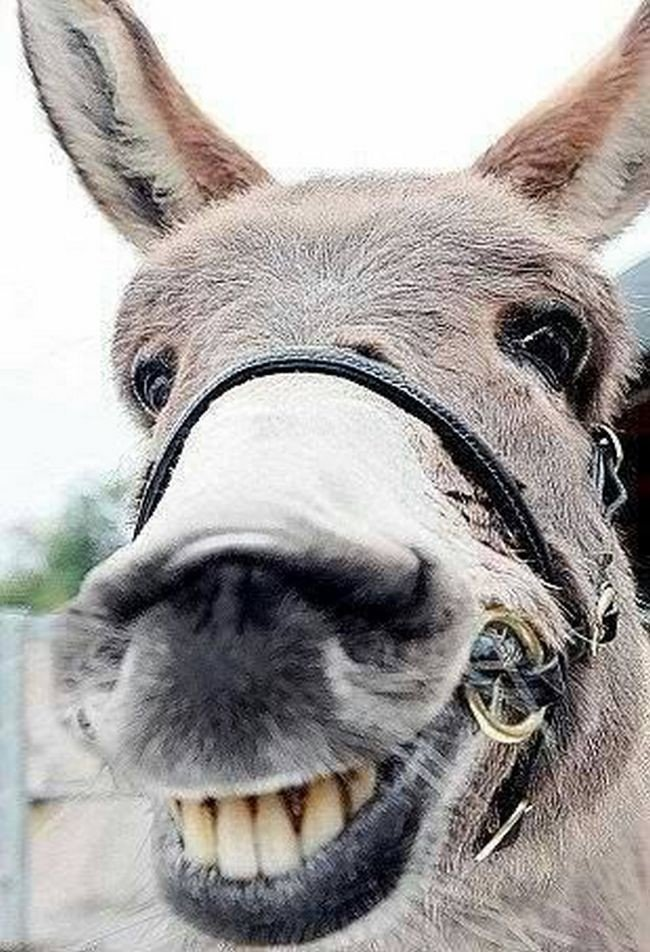
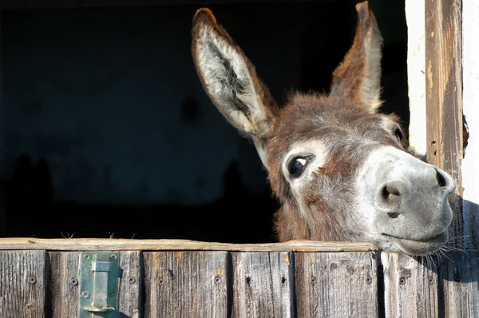
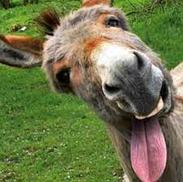

Моя автобіографія
Вступ
Мене звати Ярослав. Народився 7 вересня 2001 року (так, я по гороскопу Діва, але не душний!!!) в місті Чернігів, Україна, в самій звичайній сім'ї, яка на теперішний час складається з мене, сестри та мами.
Освіта
- Спеціалізована загальноосвітня школа І-ІІІ ступенів з поглибленим вивченням іноземних мов №2 м. Чернігова (2008 - 2015 р.р.);
- Прикарпатський військово-спортивний ліцей-інтернат Івано-Франківської обласної ради (2015 - 2019 р.р.);
- Житомирський військовий інститут (2019 - 2022 р.р.);
- Національний університет «Чернігівська Політехніка» (2023 - по т.ч.);
- Найкращий в світі курс з побудови якісних веб-інтерфейсів від Жеки Андріканича (дай Боже йому здоров'я) (2025 - по т.ч.).
Досвід роботи
- Бажання стати військовим;
- Латав дахи рубероїдом (літний підробіток);
- Все ще стаю військовим;
- Підсобник на кладовищі (так-так це стрьом, але я не розкопував могили, все легально);
- Досі тривають потуги стати військовим;
- Знову латаю дах рубероїдом (зато загар краще ніж після любого курорту);
- Вирішую стати айтішніком і кидаю навчання на віськового;
- Починається війна і все ж таки стаю військовим.
Особисте життя
На даний момент холостий, в браку не був, дітей не маю.
Заключення
В планах на теперішний час це, звісно, пережити війну і повернутися цілим. В планах на майбутнє стати класним кваліфікованим спеціалістом з великим попитом і завести сім'ю. Ще пан Павло попросив побажати менторам і менторатриці міцних нервів і багато грошей, а також від себе бажаю щастя.
